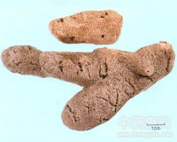

紫梢花

拼音
Zǐ Shāo Huā
别名
紫霄花、淡水海绵
来源
淡水海绵科动物脆弱骨针淡水海绵Spongilla fragilis Lecidy或刻盘淡水海绵Ephydatia muelleri var. japonica （Hilgendorf），以干燥群体入药。9～12月间采收，晒干。
生境分布
生于清流或游水中，附生于石块、树枝或水草上。分布很广。主产江苏、河南等地。
药材特点
常成棒状群体，表面凹凸不平，出水孔甚多，极易察见，通常灰色至褐色。体内构造由海绵质的纵横纤维构成密网，但干燥后极为脆弱。体骨细长，针状，两端尖锐，表面平滑无刺，其长度为180～255微米，粗约5～16微米。无皮质骨。芽球为淡水海绵的无性生殖体。芽球甚多，遍布于全体各层，各为椭圆形或钝三角形的球状体。本种之特征，为多种芽球，除单个者外，并有2～4个芽球组成的群体，各被一共同的细胞层所包围。每个芽球表面有分散存在的芽骨，并各有一颇长而稍弯曲的乳管，从细胞层的里面向外突出而开口。芽球的大小相差极大，其直径为250～500微米。芽骨远小于体骨，亦为细长针状，两端尖锐，但表面具有数目不同、大小不等、分散不匀的小刺，芽骨的长度为68～125微米，粗约3～10微米。
性状
呈不规则的块状或棒状，大小不一，中央常附有水草或树枝。长约3～10厘米，直径1～2.5厘米。表面灰白色或灰黄色，有多数小孔，呈海绵状。体轻，质松泡，断面呈放射网状，网眼内有灰黄色类圆形小颗粒（芽球），振摇易脱落。气无，味淡。以个大、身干、轻松、柔软、无杂质者为佳。
性味
甘，温。
功能主治
补肾，益精，助阳。用于阳痿遗精，小便失禁，白带。
用法用量
0.5～1.5钱，多入丸剂服。
化学成分
含海绵硬蛋白、海绵异硬蛋白、磷酸盐、碳酸盐等。
药理作用
1：无药理作用数据
摘录
《全国中草药汇编》